Why Jamstack?
Why PWA?
PWA Night OSAKA vol.5
by Takeshi Amano
天野の紹介
広島出身
カナダモントリオールのコンコーディア大学をCSと経済学の学位を取得して卒業
GengoやPayPalや電通で働く
eBay出品ツールNijuyonを開発して、世界中を旅しながら仕事
2019年11月からアムステルダム在住
日本に帰りたいけど帰れない...
天野の仕事
合同会社 池田山商会代表
いろんなサイトのPWA化
IR情報提供、インフルエンサー、EC...
ウクライナの開発パートナー会社
ヨーロッパ進出企業支援
お仕事絶賛募集中
突然ですが
今日朝起きてスマホで
どのアプリを使いました？
インスタ
Googleなんとか
Amazon...
共通して言えること
世界最速
これ以上速いサービスは無い
Service Workerとかもバッチリ
ユーザーの期待値
普段使っているアプリが最速
それ以外は全部遅い
キャッシュとかもバリバリ効いている
サイトが少しでも遅いと...
遅いサイト
使いにくいサイト
キャッシュが効いてないサイト
オリンピック -> 県大会
遅いサイトのコスト
直帰率の増加

出典: Think with Google
１秒ロードタイムが遅れる
7%コンバージョン率が下がる
買い物を途中で辞める
67%のユーザーが遅いサイトでは買い物を辞める
広告の表示に追加で2秒かかる
広告の売上が4%下がる (Bing)
Amazonの場合
1秒のロードタイムの遅れ
年間16億ドル(約1720億円)の損失
遅いサイト
80%のユーザーは遅いサイトに戻らない
SEOのランキングが下がる
競合サイトにいく
遅いサイトのUX
67%のユーザーがサイトは
4秒以内にロードすると期待
85%のユーザーがモバイルもPC版も
同じスピードで有ることを期待
71%のユーザーが遅いサイトのブランドを信じない
77%のユーザーがサイトが
遅いことをSNSとか友達に伝える
遅いサイト
結論：悪
解決方法
Jamstack
Jamstackとは？
Javascript
APIs
Markup
Javascript
クライアント側で動作
React, Vue, Svelte
Vanilla(素)のJS
APIs
データベースへのアクセスはAPI経由
REST APIs, GraphQL
Headless CMS, Wordpress, Shopify
Markup
デプロイ時に静的にファイルを生成
ファイルはCDNに置かれる
Gatsby (React), Gridsome (Vue)
Svelte (Sapper), 11ty
Jamstackの技術
静的ファイル生成
CI/CD with git
CDN
data update / cache無効化
静的ファイル生成
様々なデータソースからデータ取得
Gatsbyのテンプレートでデータ整形
画像ファイル最適化
静的htmlファイルを生成
CI/CD with git
Github, Gitlabのレポジトリにpush
Netlifyでデプロイが開始
CDNにデプロイ
静的htmlファイルが生成
CDNにデプロイ
Netlify, AWS S3, Heroku
Azure Static Web Apps, etc...
Jamstackフロー
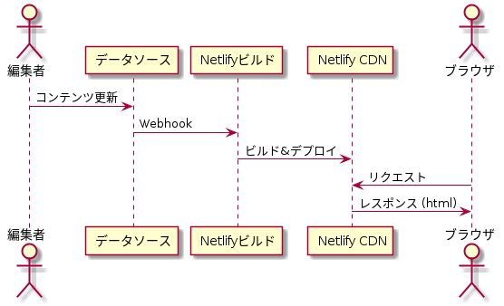LAMPフロー
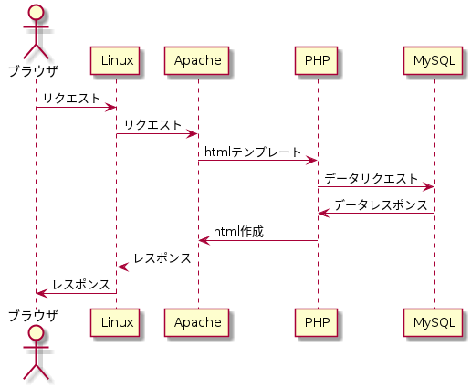NetlifyのCDN
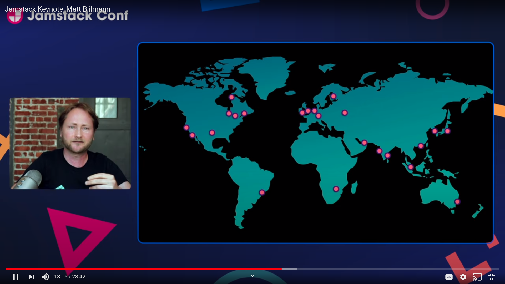LAMP
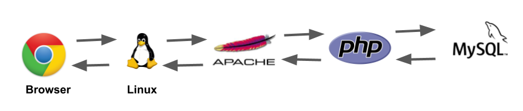Gatsby Cloud
Incremental Builds: 差分だけのビルド
Deploy Previews
自動Lighthouseチェック
Jamstackの事例
Smashing Magazine
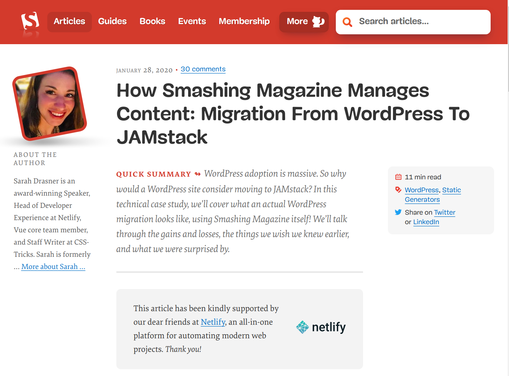
https://www.smashingmagazine.com/2020/01/migration-from-wordpress-to-jamstack/
Impossible Foods
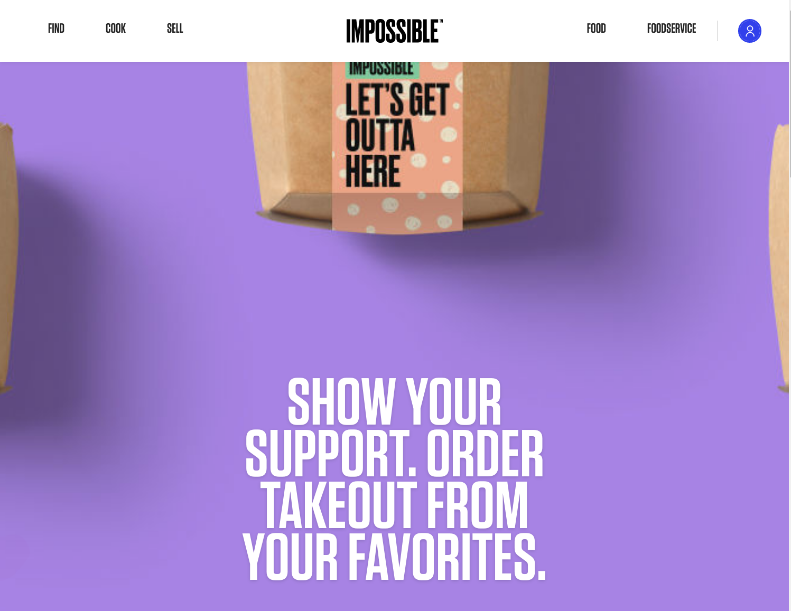
https://impossiblefoods.com/
Impossible FoodsのJamstackへの移行
page views 92%増加
unique users 61%増加
StriVectin
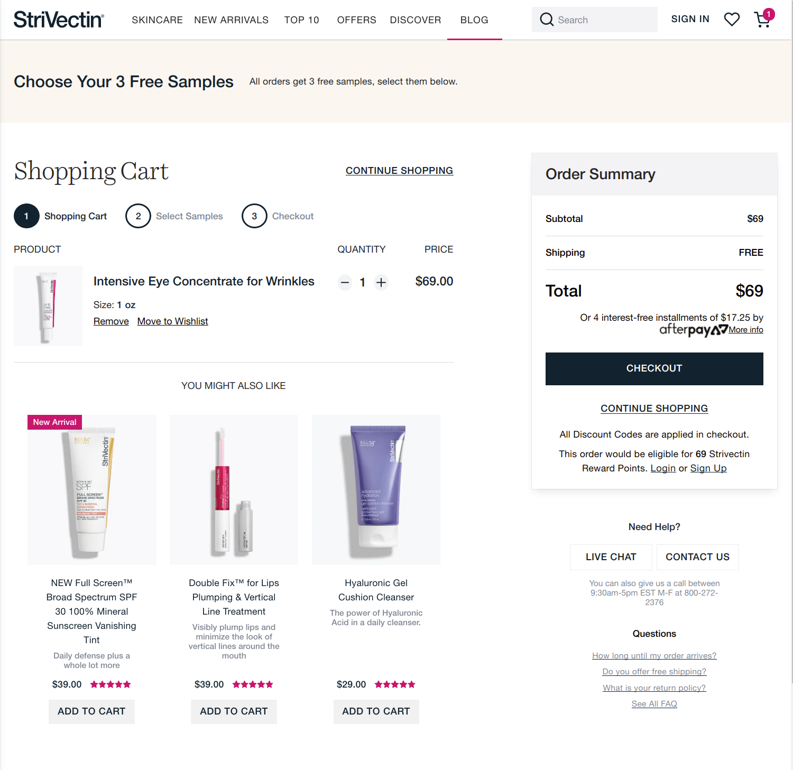
https://www.strivectin.com
StriVectinのJamstackへの移行
コードのファイル数が20,000から300に
月$2000かかっていたホスティングが一日数ドルに
オーガニックの流入が継続して20%増加
出典: https://softblues.io/what-is-jamstack-gatsby-and-how-it-can-improve-your-web-experience/
The COVID Tracking Project
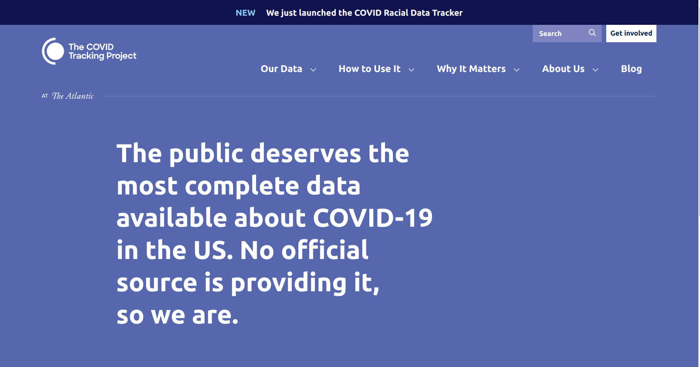
https://covidtracking.com/
The COVID Tracking Project
Netlify, Gatsby
データはContentfulとGoogle Sheets
３ヶ月でゼロから一日200万APIアクセス
Whitehouseが公式データの
代わりに扱うと発表
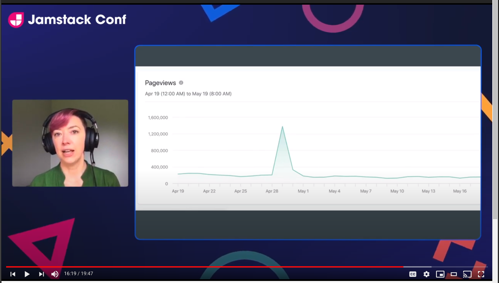
https://www.youtube.com/watch?v=ryngYoHXNfQ
PVが１日150万を超えたが全く気が付かなかった
今日朝起きてスマホで
どのアプリを使いました？
インスタ
Googleなんとか
Amazon...
共通して言えること
スマホに特化したUI
パソコン版は見たこと無い
ユーザーはスマホを使っている
ほとんどがネイティブアプリ
webはちょこちょこ
webとネイティブアプリを
意図的に使い分けている訳ではない
スマホユーザーの期待値
スマホ用に洗練されたUI
サクサク動く
電波が悪くなっても落ちない
スマホの中でネイティブアプリ
みたいに動作しない
結論：悪
解決方法
PWA
PWA
Webサイトとして動作
AndroidとiOS両方で動作
ネイティブアプリみたいなUI
ネイティブアプリみたいにさくさく動く
Service Workerで接続が切れても使える
PWA事例
Rooted Objects
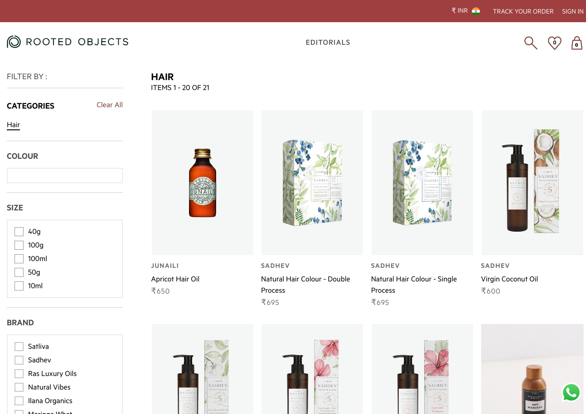
https://rootedobjects.com
Rooted Object PWA化
インドのECサイト
VueStorefrontでの実装
ページロード時間改善、直帰率改善
コンバージョン率162%アップ
ページロード時間25%改善
売上44%アップ
出典: https://www.vuestorefront.io/rootedobjects-case-study
Petlove
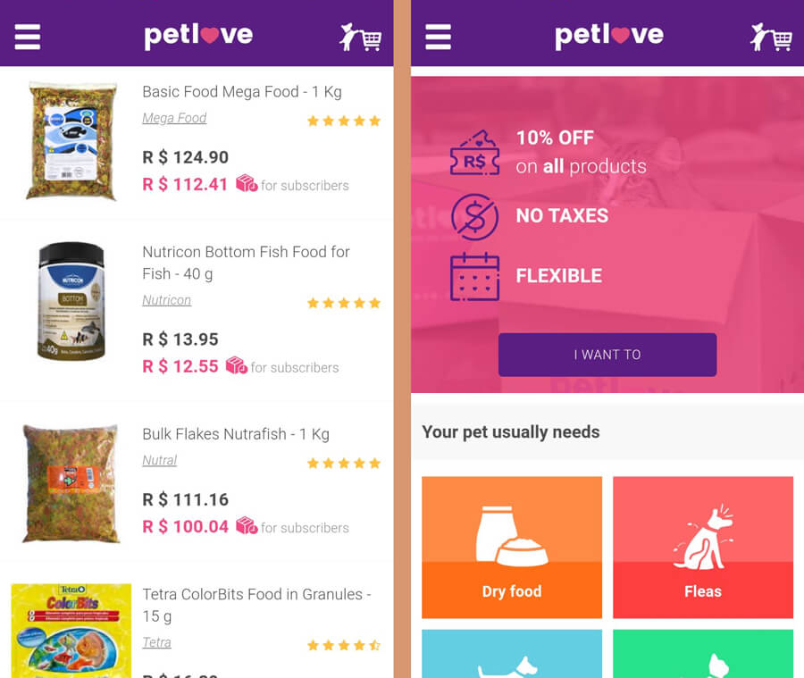
https://www.petlove.com.br
出典: https://getshogun.com/learn/dtc-brands-progressive-web-apps
Petlove PWA化
ブラジルのペット用品ECサイト
サイト滞在時間 2.7倍
コンバージョン率 2.8倍
データダウンロード減少
ブラジルでは2Gや3Gで使っているユーザーが多い
Paula's Choice
https://www.paulaschoice.com
Paula's Choice PWA化
スキンケアのECサイト
グローバルで展開
商品閲覧時間 55%アップ
コンバージョン率 46%アップ
売上 40%アップ
まとめ
遅いサイト -> 悪
スマホで使いにくいサイト -> 悪
Jamstackでパフォーマンスを劇的に改善
PWAでユーザー体験改善
売上げアップ！
ありがとうございました
合同会社 池田山商会
天野たけし
amano@ikedayama.jp
twitter.com/moksahero